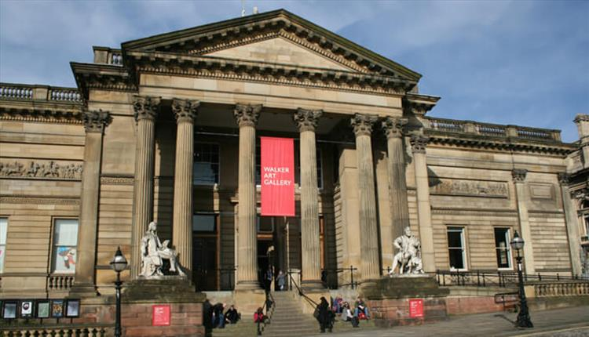
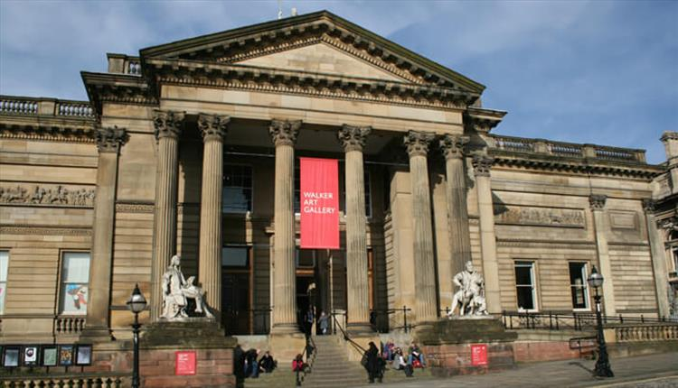

Tate Liverpool needs no introduction – it stages major international exhibitions of modern art, featuring work by everyone from Tracey Emin to Picasso. In the beautiful William Brown Street, you can find Walker Art Gallery, the national gallery of the North, which houses works by Hockney, Degas, Turner and Rembrandt.
Also check out The Bluecoat too, the distinctive Grade I listed, 300-year-old arts centre which offers a lively programme of visual art, music, dance, live art and literature. Open Eye Gallery is an independent not-for-profit photography gallery championing photography as an art form and staging challenging and entertaining exhibitions. FACT, the Foundation for Art and Creative Technology, in addition to its cinema screens, shows ground-breaking new media art exhibitions.